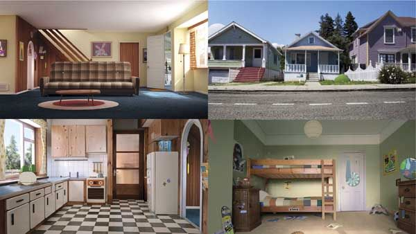
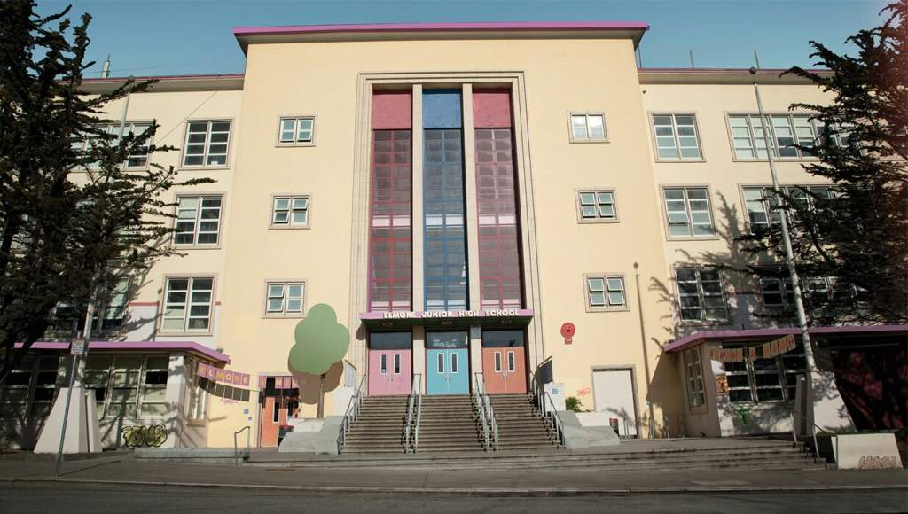
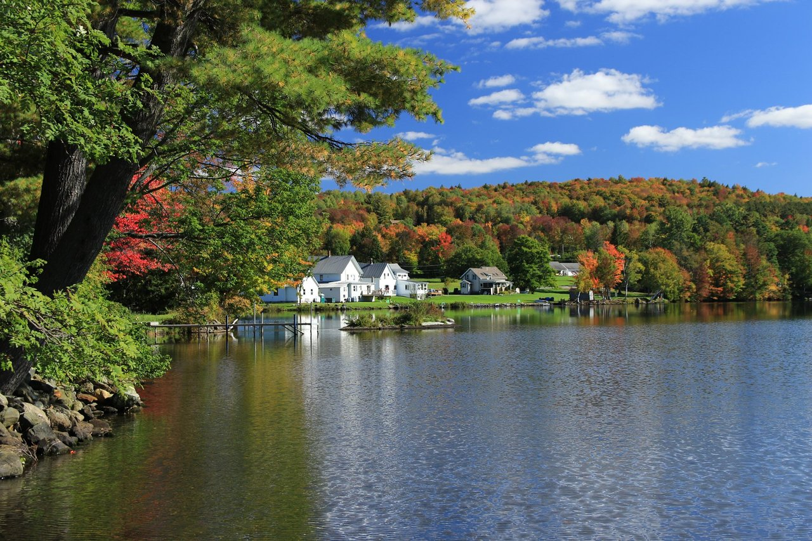
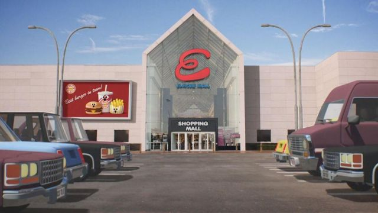

| Gumball |
 |
| El Increíble Mundo de Gumball es una serie de televisión de animación creada por Ben Bocquelet y producida por Cartoon Network. La serie sigue las aventuras de Gumball Watterson, un gato azul, y su hermano adoptivo Darwin, un pez con piernas. Juntos viven en la ciudad ficticia de Elmore, un lugar donde conviven una gran variedad de personajes excéntricos, desde personas y animales hasta objetos inanimados que tienen vida propia.
La trama se centra en las situaciones cotidianas, a menudo absurdas, que enfrentan Gumball, Darwin y su familia: su madre Nicole, su padre Richard y su hermana Anais. A lo largo de la serie, Gumball y Darwin se meten en todo tipo de problemas debido a su ingenuidad, su falta de sentido común o sus intentos de resolver situaciones que no comprenden completamente.
La serie es conocida por su estilo de animación único, que combina diferentes técnicas y estilos visuales, y por su humor irreverente, lleno de referencias culturales, bromas rápidas y situaciones inesperadas. El Increíble Mundo de Gumball también aborda temas como la amistad, la familia, la adolescencia y las relaciones sociales de una manera divertida y accesible para todas las edades.
Es una serie que mezcla el humor absurdo con una crítica sutil sobre aspectos de la vida cotidiana y la sociedad. |
|  |
 |
 |
 |
| La casa de los Watterson: La casa de Gumball y su familia es otro escenario central. En este lugar, los personajes interactúan en situaciones cotidianas, pero siempre con un toque surrealista. La dinámica familiar, las discusiones entre Gumball y su hermana Anais, o los esfuerzos de su papá Richard por no ser muy responsable, son comunes aquí.
|
La escuela de Elmore: La escuela es un lugar donde Gumball y Darwin se meten en todo tipo de enredos. Los profesores son personajes excéntricos y los estudiantes tienen personalidades muy variadas. Es un escenario recurrente en la serie, lleno de situaciones absurdas y problemáticas que los protagonistas deben enfrentar, desde clases caóticas hasta peleas con compañeros.
|
El parque de Elmore: El parque es otro lugar donde los personajes disfrutan de actividades como hacer picnics o jugar. Sin embargo, en el mundo de Gumball, el parque es a menudo el escenario de situaciones inesperadas, como criaturas raras o eventos inusuales que transforman un día común en una aventura épica.
|
El parque de Elmore: El parque es otro lugar donde los personajes disfrutan de actividades como hacer picnics o jugar. Sin embargo, en el mundo de Gumball, el parque es a menudo el escenario de situaciones inesperadas, como criaturas raras o eventos inusuales que transforman un día común en una aventura épica. |
| Todos los derechos reservados 2025 |
| |